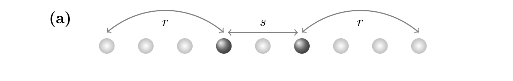
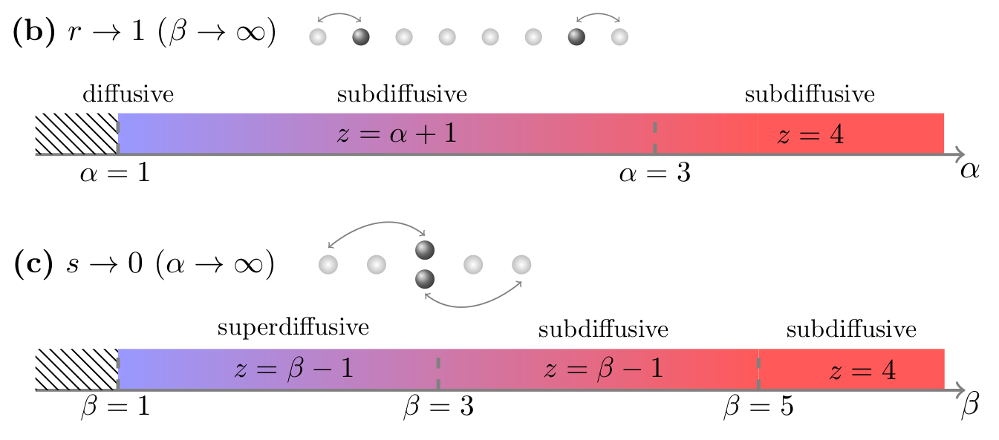
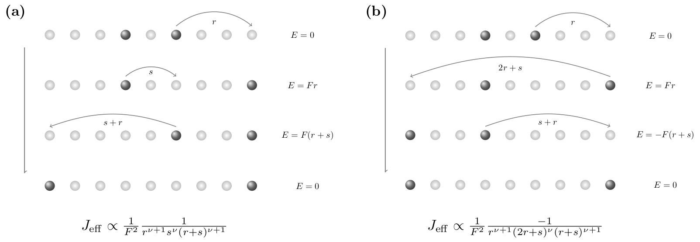

Hydrodynamics in long-range systems with kinetic constraints
18. May 2023
In the last few months, together with my collaborators Alan Morningstar and Nick O'Dea, we worked on a project studying the competition of long-range interactions and center-of-mass conservation, and their impact on transport properties of many-body systems. We published a paper that can be found on the arXiv. In this blog post, I want to tell you about some of our findings in a, hopefully, relatively easy to understand way.
Broadly speaking, hydrodynamics describes the long-time evolution of conserved quantities from local to global equilibrium. More specifically, consider for instance a system with a conserved number of particles, e.g., particles hopping on a chain composed of discrete lattice sites, where the initial particle distribution is slightly inhomogeneous. Clearly, this is a nonequilibrium situation since in equilibrium the particle number would be the same on every site. If the particles now hop randomly to nearest-neighboring lattice sites, driven by the finite gradient of the particle density, then this random-walk-like dynamics would on average be described by diffusive hydrodynamics.
Understanding the emergence of such hydrodynamics in many-body quantum systems is a highly challenging and actively pursued research question. Likewise, it is an intriguing question what classes of hydrodynamics, e.g., some anomalous types of transport other than just standard diffusion, can arise in certain systems. In this context, our study was motivated by two different directions:
On one hand, it has been shown in recent works that models with kinetic constraints can feature slow subdiffusive transport. One popular example are systems with higher-order conservation laws, e.g., in addition to the number of particles, the center-of-mass of the particles is conserved as well. The slower transport can be understood from the fact that the additional condition of conserving the center-of-mass restricts the mobility of the particles. Importantly, such kinds of systems are not just of theoretical interest, but can actually be realized in experiments. For instance, in cold-atom platforms, the center-of-mass conservation can effectively be induced by tilting the optical lattice.
On the other hand, in contrast to constraint systems, faster than diffusive transport can be achieved in systems with long-range interactions. Consider for instance a situation where particles can hop to far-away sites, but the probability for such a long-range hop decreases (as a power law) with increasing distance, e.g., \( \propto |i-j|^{-\nu} \). Depending on the value of \(\nu \), transport in these systems can be diffusive (as in strictly short-range models), but also superdiffusive or faster (see also one of my previous publications for more details and many references). Importantly, long-range interactions are ubiquitous in nature and should be familiar to you also from other contexts (e.g., Coulomb interaction). Therefore, similar to the center-of-mass-conserving systems introduced above, it is not surprising that understanding the physics of systems with long-range interactions is immediately relevant to experiments, e.g., in trapped-ion platforms or in experiments with polar molecules.
A natural question is now what classes of hydrodynamics can emerge in models, where long-range interactions which facilitate faster transport, compete with center-of-mass conservation which constrains transport. A convenient starting point to study this question is provided by pair-hopping models described by the Hamiltonian,
\[H = \sum_x \sum_{s,r} J_{sr} \left(S_{x}^+ S_{x+r}^- S_{x+r+s}^- S_{x + s + 2r}^+ + \text{h.c.}\right)\]
where the \(S_x^\pm \) are quantum spin operators at lattice site \(x \). More specifically, these ladder operators lead to an increase (decrease) of the \(z \) component of the spin. Inspecting the terms in \(H \), one finds that spin-flips can only occur in pairs. That is, a spin excitation can only travel from \(x+r \) to \(x \) if simultaneously an excitation travels from \(x+r+s \) to \(x + s + 2r \). The opposite process can occur as well (denoted by \( \mathrm{h.c.}\)). Note that in this way, the Hamiltonian conserves both the total magnetization \(\sum_x S_x^z\) as well as the associated dipole moment \(\sum_x x S_x^z\).
In the previous paragraph, I have switched language from "particles" to "spins", and from "center-of-mass" to "dipole moment". This is quite a popular mapping which is often used by condensed-matter physicists. Simply pick the picture you are most comfortable working with! Going back to particles (for the moment), the pair-hopping processes described by \(H \) can be illustrated as shown in the following image:

Apparently, there are two relevant length scales. A "hopping" distance \(r \) and a "pairing" distance \(s \). The strengths of the terms in \(H \) with different \(s \) and \(r \) will be encoded by the coupling coefficient \(J_{sr} \). As discussed further below, we will particularly consider cases where \(J_{sr} \) decays with increasing \(s \) and \(r \).
Studying quantum dynamics is unfortunately extremely challenging. While analytical approaches are comparatively rare, numerical methods are limited to rather small system sizes due to the exponentially increasing complexity of quantum systems. Therefore, we here proceed differently and consider a classical system of particles (or rather some coarse-grained cells), whose dynamics is generated by a master equation that incorporates the pair-hopping processes shown in the above picture.
\[ \begin{align} \dot{n}_x = \sum_{r,s} C_{sr} [ &-(n_{x-2r-s} - n_{x-r-s} - n_{x-r} + n_{x}) \\[-1em] &+(n_{x-r-s} - n_{x-s} - n_{x} + n_{x+r}) \\ &+(n_{x-r} - n_{x} - n_{x+s} + n_{x+s+r}) \\ &-(n_{x} - n_{x+r} - n_{x+s+r} + n_{x+s+2r}) ] \end{align} \]
Here, \(n_x \) is the particle density at site \(x \), and the four lines of the master equation correspond to the four different ways this density can change due to pair-hopping processes involving the distances \(s \) and \(r \). The amplitude of these processes is set by the coefficients \(C_{sr} \) for which we here choose the form
\[C_{sr} = \frac{1}{(s+1)^\alpha r^\beta}\]
Thus, \(s \) and \(r \) are individually controlled by the two exponents \( \alpha \) and \( \beta \). Long-range interactions correspond to small values of \( \alpha, \beta \). Generally, the idea of this approach is that the hydrodynamics described by the classical master equation correctly captures the emerging hydrodynamics in microscopic quantum systems. While this is not obvious, the believe is that chaotic highly excited quantum systems at long times behave essentially classically and that the resulting hydrodynamics should be universal (and we indeed provide evidence for this in our paper, but I won't discuss this any further here). Note that, following a Fermi's Golden rule argument, a meaningful comparison of the master equation and the quantum Hamiltonian \(H \) requires to choose the coupling coefficients as \(J_{sr} \sim \sqrt{C_{sr}} \).
It is now instructive to consider two distinct limiting cases: (i) \(\beta \to \infty \), which corresponds to \(r \to 1 \). The hopping distance is thus short range while the pairing distance \(s \) can be long-ranged. (ii) \(\alpha \to \infty \), which corresponds to \(s \to 0 \). In this case, \(r \) can be long-ranged while \(s \) is small. We can analyze the master equation analytically as well as numerically, focusing on the regime of long times and long wavelengths where hydrodynamics is expected to emerge. Sparing you the details, the phase diagram that we obtain for the cases (i) and (ii) is summarized below.

As can be seen, the effects of \(s \) and \(r \) (or \( \alpha \) and \( \beta \) ) are somewhat different. Specifically, in the case of a short-range hopping distance, the fastest achievable transport is diffusive. This results from a local breakdown of the center-of-mass conservation. In contrast, if the pairing distance remains short-ranged but hops can be long-ranged, transport can become arbitrarily fast with the dynamical exponent \(z \to 0 \). Eventually, if \( \beta \) becomes too small, locality breaks down and the model essentially behaves as if it would have all-to-all connectivity. In this limit, hydrodynamics breaks down as well since any kind of inhomogeneity would relax basically instantaneously.
While understanding the above "toy model" is already quite interesting, the question is of course if such physics is also relevant to actual realistic systems. As already mentioned above, a good candidate in this context are quantum systems in a linear potential. Specifically, consider the so-called long-range XY model,
\[H_\text{XY} = \sum_{i \lt j} \frac{J}{|i-j|^\nu} (\sigma^+_i \sigma^-_j + \sigma^-_i \sigma^+_j) + F \sum_i i n_i\]
The \( \sigma^\pm_i \) denote Pauli matrices which describe spin-\(1/2 \) degrees of freedom. \(J \) sets the energy scale of the interactions whose decay is controlled by the exponent \( \nu \). Moreover, the strength of the tilt is given by \(F \). Note that the term \( \sum_i i n_i \), where \(n_i = (\sigma_i^z + 1)/2 \), precisely corresponds to the "center of mass" of the spins. In the case where \( F \gg J\), the tilt is the dominant term and the center-of-mass (dipole moment) is effectively conserved, at least on exponentially long time scales. In order to understand the dynamics of \(H_\text{XY} \) at strong tilts, one can perform a Schrieffer-Wolff transformation to obtain an effective model which describes the relevant processes in this regime. While you can check out our paper for the details, I here want to take an easier route and simply consider some example hopping-processes that conserve the center-of-mass and the energy of the system:
